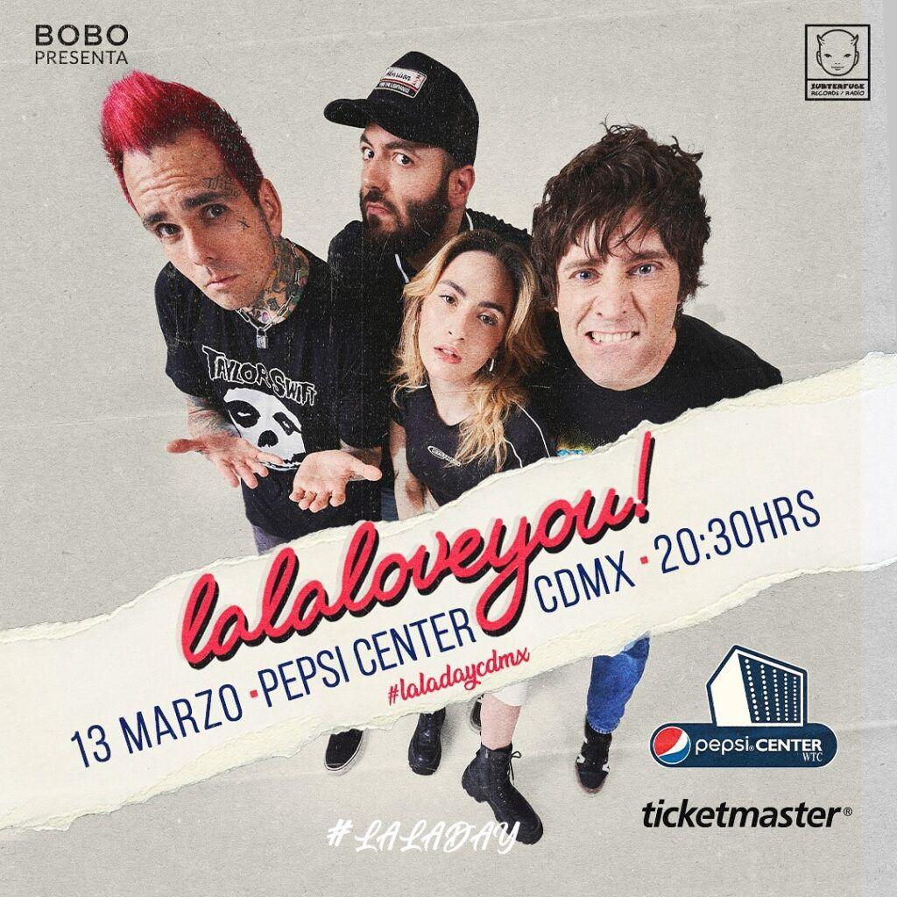

Lala Love You- La banda que ha conquistado al mundo del punk-pop Desde su formación en 2007 en Parla (Madrid), La La Love You se ha convertido en un fenómeno internacional, cautivando al público con su estilo punk-pop y su energía arrolladora.
Su hit "El Fin del Mundo" ha alcanzado el sexto disco de platino y supera las 150 millones de reproducciones en Spotify, rompiendo récords históricos en España al mantenerse en el top de los más escuchados por más de 1000 días.
Con su álbum más reciente, "Blockbuster" (2023), la banda continúa sumando logros, destacando temas como "El Principio de Algo", también disco de platino. Después de exitosas presentaciones en México, Chile y Japón, y tras agotar el Lunario del Auditorio Nacional y llenar el WiZink Center de Madrid con 16,000 asistentes en su evento especial LaLaDay, La La Love You sigue expandiendo su legado y capturando a nuevas generaciones. Próximamente, regresarán a México en 2025 con una gira especial para llevar LaLaDay por el país.
El 13 de marzo se presentarán en el Pepsi Center de Ciudad de México, en lo que promete ser una de las fechas más importantes de su carrera. Redes Sociales: @lalaloveyouoficial